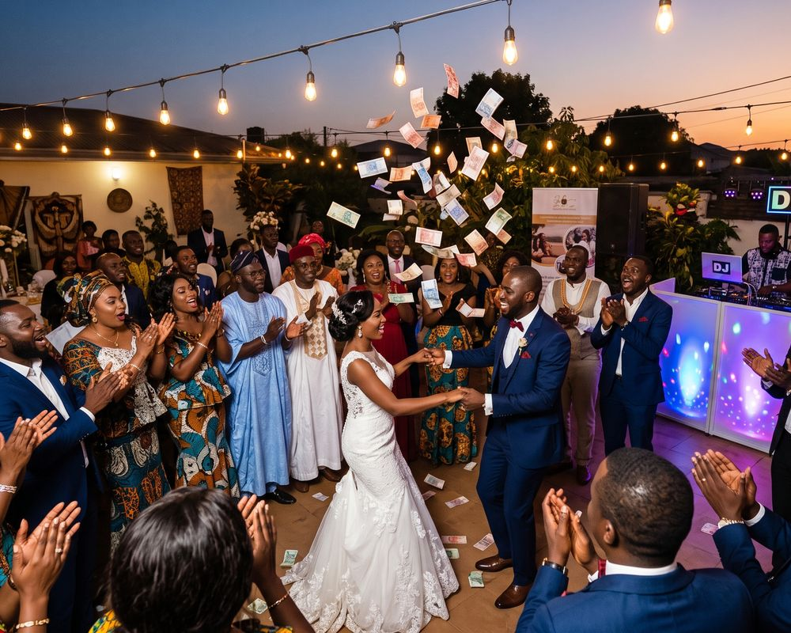
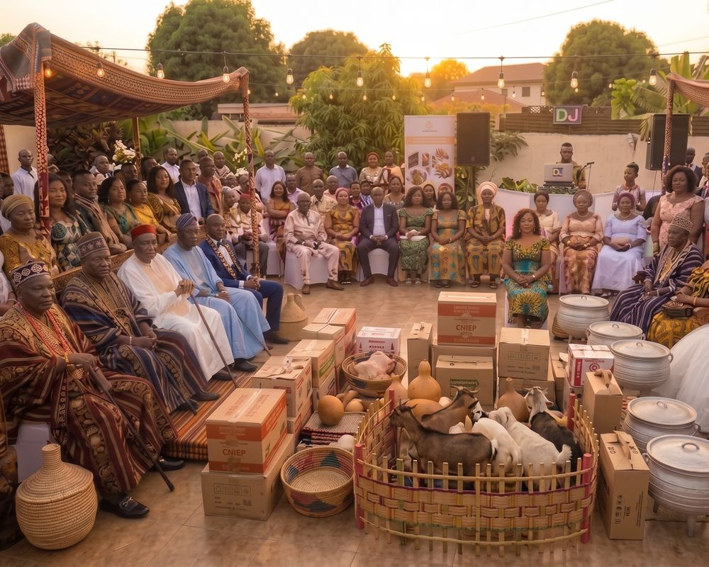
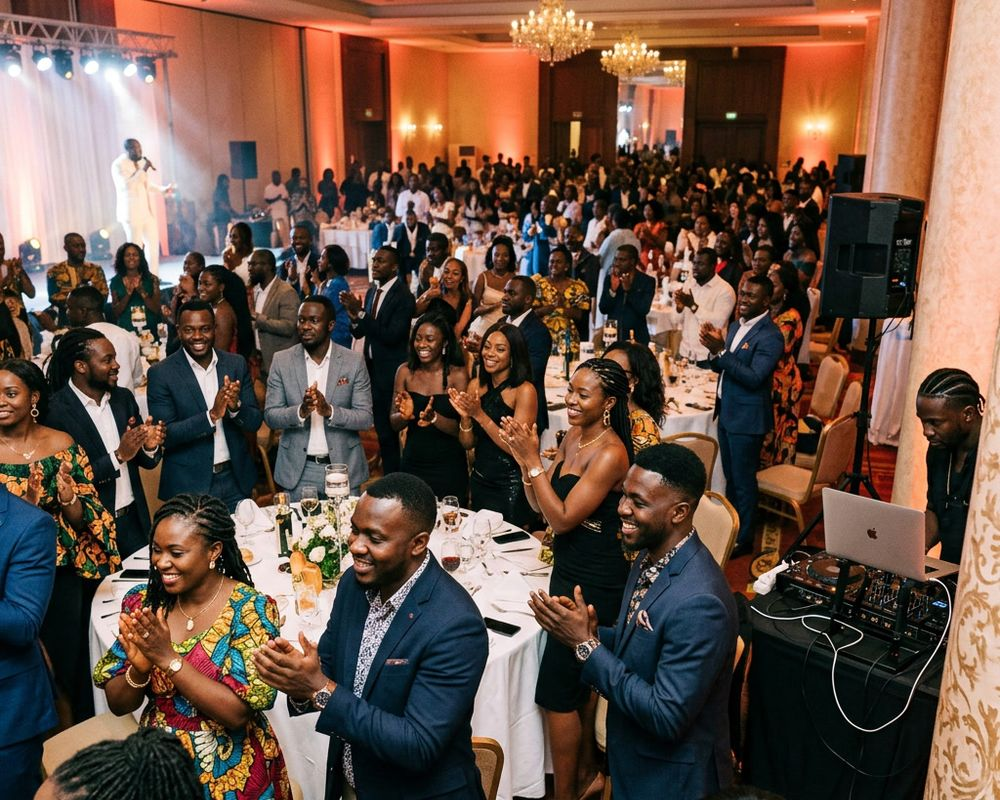
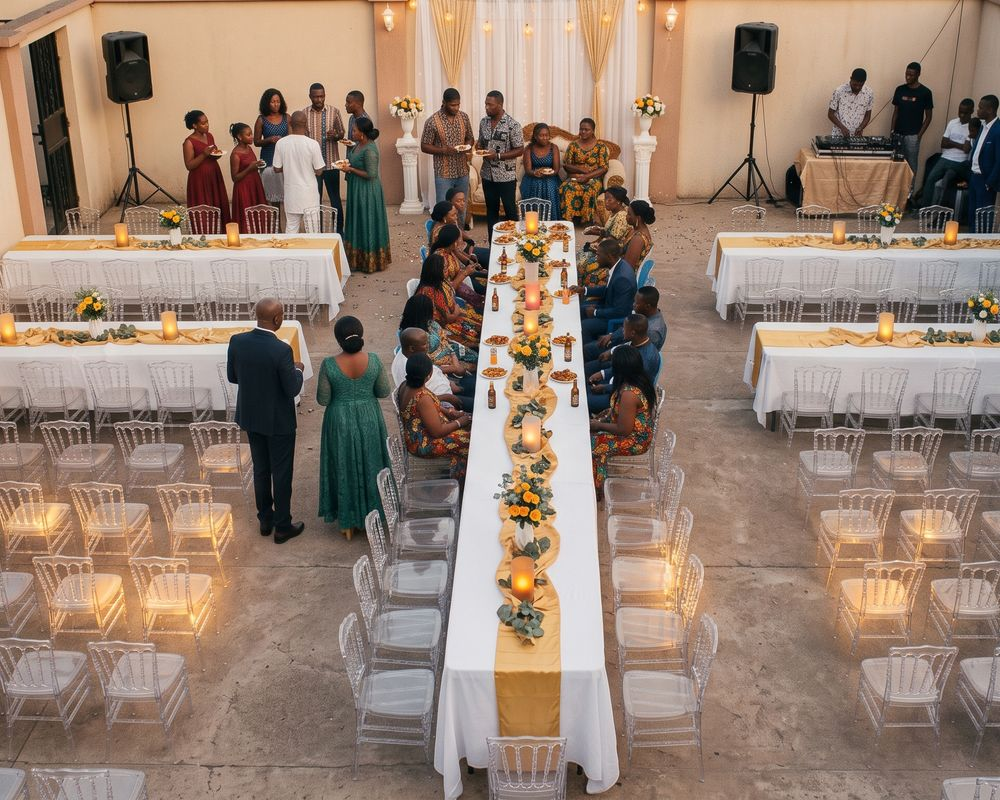
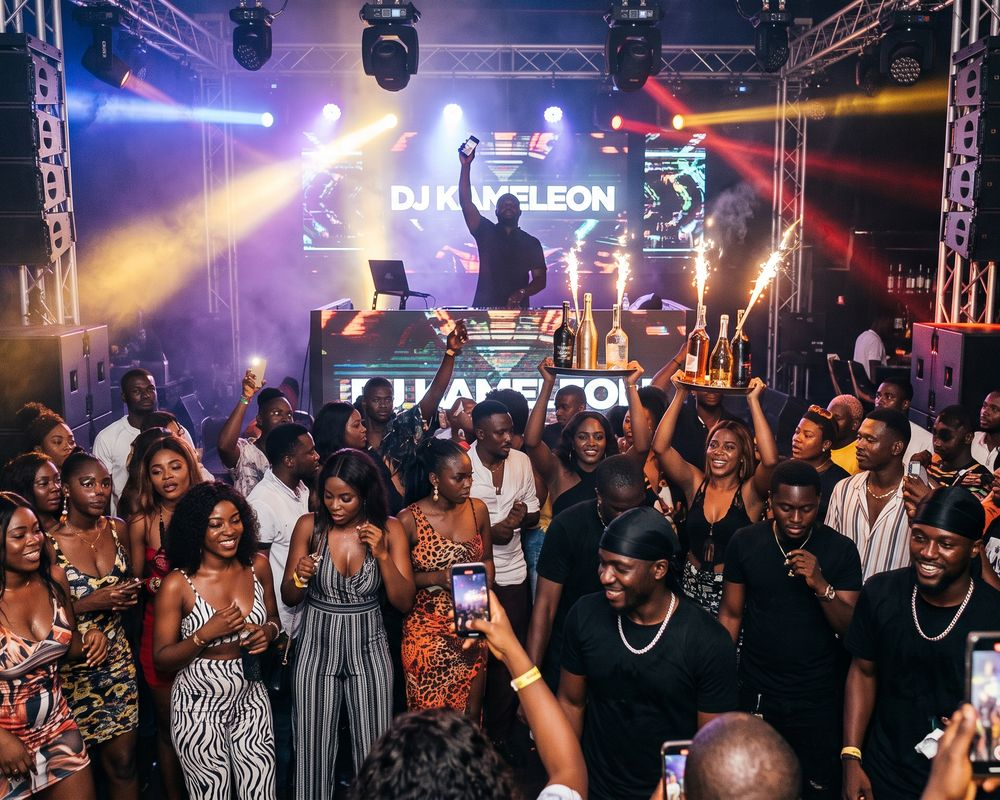
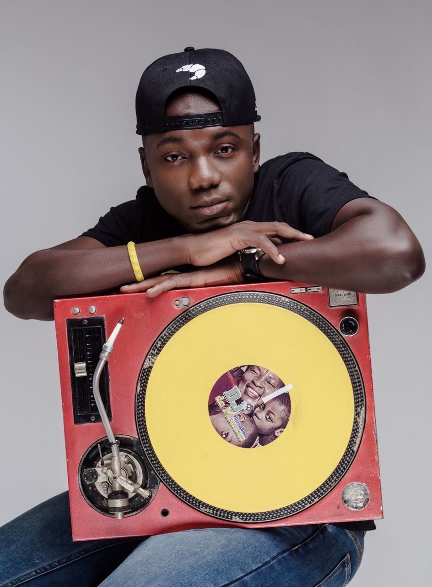
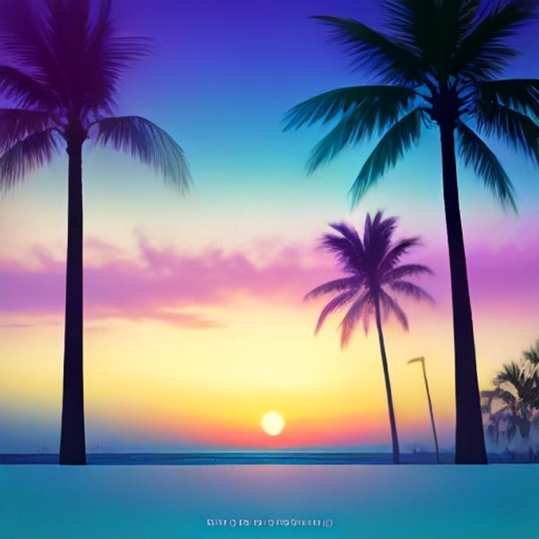
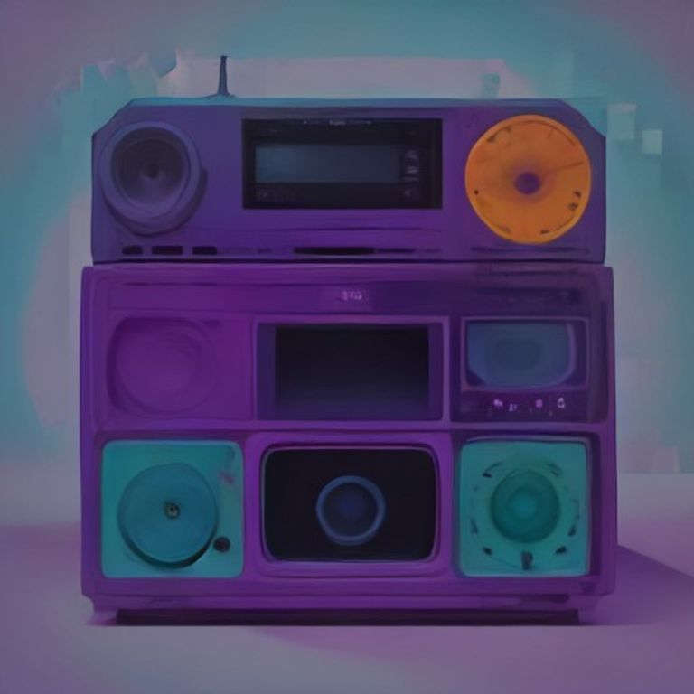
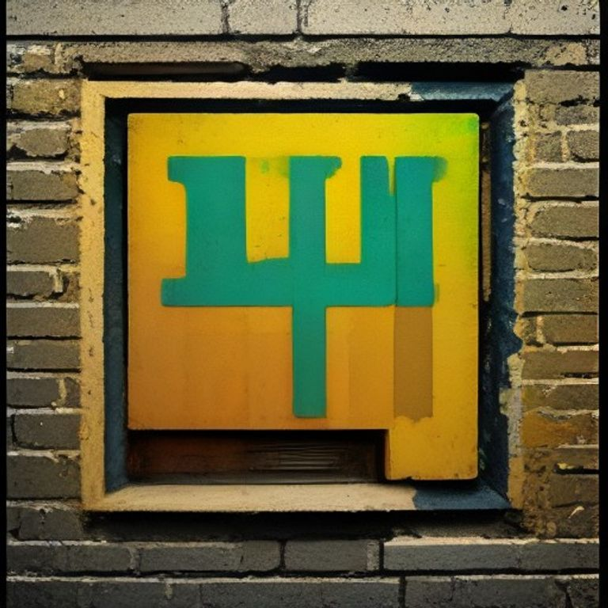
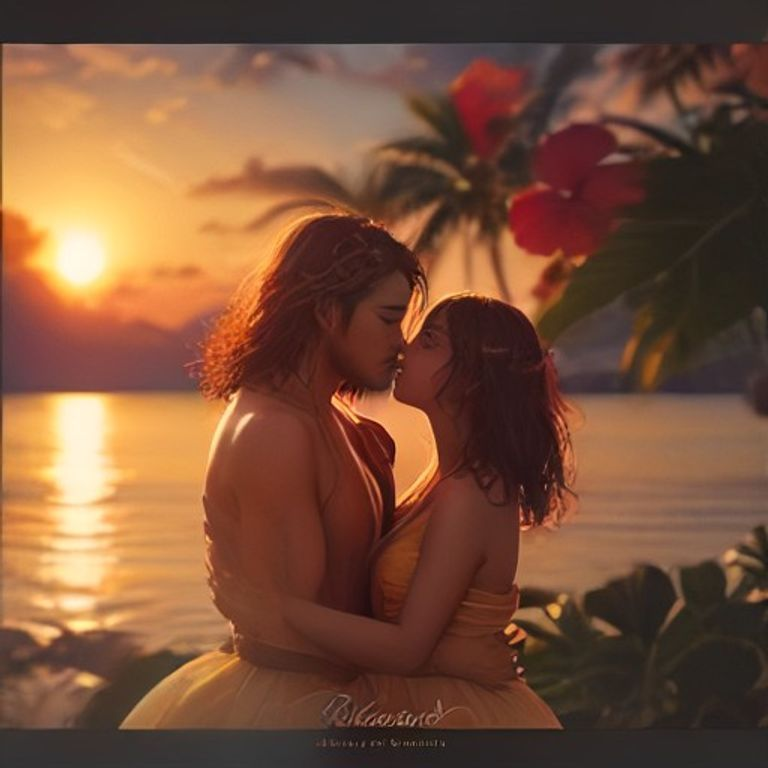

01 — Cérémonie
Mariage
Du cocktail à la fin de soirée, entrée des mariés et ouverture du bal respectées.
AlloDJ réserve des DJs à Douala pour les mariages, les cérémonies traditionnelles, les soirées d'entreprise, les anniversaires et les nuits de club. Indiquez la date, le quartier et votre budget : la plateforme désigne un DJ disponible plutôt que de diffuser votre demande à une liste.
Réserver un DJ sur AlloDJ tient en trois étapes : décrire l'événement, recevoir une recommandation avec le tarif affiché, puis bloquer la date avec 10 % d'acompte. Le solde se règle 3 jours avant l'événement et l'annulation reste sans frais pendant 48 heures.
Date, lieu, budget, style. Deux minutes dans l'app — pas dix messages restés sans réponse.
Un DJ désigné, tarif réel affiché avant que vous ne réserviez. Vous restez libre d'en choisir un autre.
10 % pour bloquer la date, le solde 3 jours avant. Annulation sans frais dans les 48 h.
AlloDJ couvre huit types d'événements à Douala : mariage, cérémonie traditionnelle et dot, soirée d'entreprise, anniversaire, baptême, remise de diplôme, fête privée, concert et club. Le type d'événement détermine le déroulé, les moments-clés et le répertoire — la recommandation en tient compte.

Du cocktail à la fin de soirée, entrée des mariés et ouverture du bal respectées.

Un DJ qui connaît le déroulé et alterne répertoire du terroir et sons actuels.

Lancements, séminaires, fin d'année. Calibré pour l'image de la boîte.
Une playlist qui parle à la génération présente et fait danser tout le monde.

Ambiance familiale, puis montée en énergie une fois les enfants couchés.
Célébration jeune et rythmée pour marquer le coup avec la promo.
Retrouvailles de la diaspora, fêtes à la maison, soirées entre proches.

Warm-up, première partie ou set principal, avec le matériel qu'il faut.
Les DJs rattachés à Douala couvrent l'afrobeats, le zouk, le vinyle, le club et les prestations corporate. Chacun est entré sur recommandation d'au moins 3 DJs déjà actifs, et chaque prestation est notée ensuite.

Les compiles des DJs AlloDJ s'écoutent avant de réserver. Sept compiles signées DJ Fab, cofondateur de la plateforme, couvrent l'amapiano, le zouk, le rap français des années 90 et le R&B des années 2000. L'écoute complète se fait dans l'application.




Réserver un DJ par bouche-à-oreille laisse le tarif, l'annulation et le recours à la négociation. Sur AlloDJ, le tarif est affiché avant réservation, l'acompte est fixé à 10 %, l'annulation est sans frais pendant 48 heures et chaque prestation est notée.
| Critère | Bouche-à-oreille | AlloDJ |
|---|---|---|
| Tarif | Négocié à l'aveugle | Affiché avant de réserver |
| Paiement | Espèces, rien d'écrit | Acompte 10 % + solde, dans l'app |
| Annulation | Au cas par cas | 48 h pour annuler sans frais |
| Sélection | Le DJ qu'on connaît | Recommandation + profils à comparer |
| Aperçu | Aucun avant le jour J | Compiles en écoute libre |
| Avis | Réputation orale | Notes après chaque prestation |
| Échanges | Messages éparpillés | Messagerie intégrée, tout tracé |
Rejoindre le roster AlloDJ passe par la cooptation : il faut qu'au moins 3 DJs déjà actifs se portent garants du nouveau profil. Il n'existe pas de formulaire de candidature ouvert — la réputation de ceux qui recommandent engage celle du DJ recommandé, et l'inverse.
« Un DJ n'entre pas parce qu'il le demande. Il entre parce que trois DJs déjà en place engagent leur réputation sur la sienne. »
AlloDJ — règle de cooptation
DJs déjà actifs doivent recommander un nouveau profil pour qu'il rejoigne la plateforme.
Indiquez la date, le lieu dans Douala et votre budget dans l'application AlloDJ. La plateforme désigne un DJ disponible à Douala pour cette date, adapté à votre type d'événement. La réservation est confirmée par un acompte de 10 %.
C'est vous qui annoncez le budget : AlloDJ cherche un DJ de Douala dans cette fourchette plutôt que de vous faire comparer des devis. La seule règle fixe est l'acompte de 10 %, le solde étant réglé 3 jours avant l'événement. Le tarif dépend du DJ, de la durée et du matériel demandé.
Cela dépend des disponibilités du soir demandé. La plateforme ne propose que des DJs réellement libres à cette date : si aucun ne l'est à Douala, elle ne vous fera pas patienter sur une promesse.
Oui. La location de matériel de sonorisation se réserve depuis l'application, au même endroit que le DJ, pour les prestations à Douala.
AlloDJ couvre aussi Yaoundé — voir la page booking DJ à Yaoundé. Le fonctionnement est identique : date, lieu, budget, puis un DJ désigné.
On ne postule pas. L'entrée se fait sur recommandation d'au moins 3 DJs déjà actifs sur la plateforme. Ce sont eux qui se portent garants du niveau et du sérieux du nouveau profil.
AlloDJ tourne déjà dans votre navigateur. Les versions App Store et Google Play arrivent.